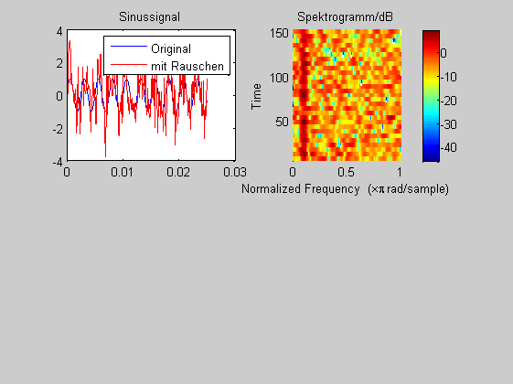

Contents
% % Aufgabe: Bandsperre % (i)Erzeugen Sie einen stark verrauschten Sinuston mit der Frequenz f=400Hz % für ein System mit der Abtastfrequnz f_A= 8kHz. Filtern Sie das Signal % mit einem ARMA-Filter mit den transversalen bzw. rekursiven Koeffizienten % b = [1, -2cos(2pi*f/f_A) 1] bzw. a = [-C*2cos(2pi*f/f_A)) +C^2]] mit C = 0.98 und % C = 0.85 und stellen Sie die Ergebisse im Zeitbereich und als Spektrogramm dar. % Skizzieren das Realisierungsschema in Direktform 1. % (ii) Welche Parameter oder Parameterkombinationen der Bandsperre schätzen % Sie als kritisch ein? Überprüfen Sie dies durch eine Simulation. % (c) HSM, B. Wir 26.7.2012 clear all; close all;
Sinuston
F_A = 8000 % Abtastfrequenz in Hz T_A = 1/F_A % Abtastabstand in s WINDOW = 64; % Fenster für Spektrogramm F = 400; % Sinus-Frequenz in Hz % F = 3900; % F = 100; t = 0:T_A: T_A*999; x = sin (2*pi*F*t); r = randn(size(t)); x_r = x + r; figure(1) subplot(2,2,1); plot(t(1:200),x(1:200),'b',t(1:200),x_r(1:200),'r'); title('Sinussignal');legend('Original','mit Rauschen'); subplot(2,2,2) spectrogram(x_r,WINDOW);colorbar;title('Spektrogramm/dB')
F_A =
8000
T_A =
1.2500e-004
 (i) Bandsperre
C = 0.98 %C = 0.85 % C = 0.999; % b = ..... ; a = ............; % y = filter(......); % subplot(2,2,3); plot(t(1:200),y(1:200),'b',t(1:200),r(1:200),'g',t(1:200),x_r(1:200)- y(1:200),'r'); % title('.. nach Bandsperre');legend('Filterausgang','Rauschanteil','rek. Sinus') % subplot(2,2,4); % spectrogram(y,WINDOW);colorbar;title('Spektrogramm/dB')
C =
0.9800
(ii) Kritische Parameter
Ausblick: PN-Diagramm und Frequenzgang
figure(2); zplane(b,a); figure(3); freqz(b,a,512);